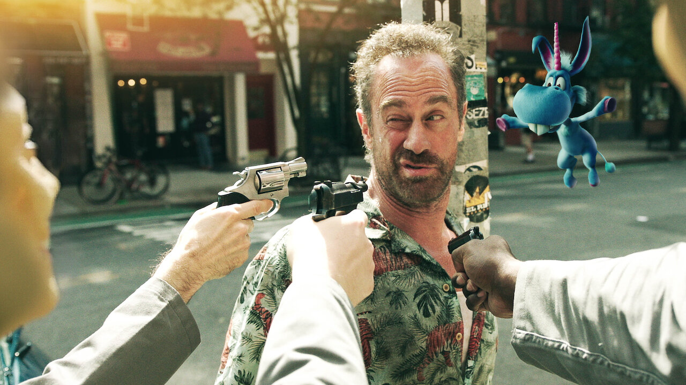

Personajes
Sinopsis
Nick Sax es un expolicía alcohólico convertido en sicario que vive sus días con drogas y cinismo. Después de que le disparan y lo dan por muerto, él revive bajo el cuidado de los paramédicos y ahora puede ver a un pequeño caballo alado caricaturesco, azul, infantil e inocente llamado Happy. Happy es el amigo imaginario de una niña llamada Hailey, que ha sido secuestrada por un desquiciado vestido de Santa Claus que también ve a los seres imaginarios. Happy escapa buscando la ayuda de Nick para encontrarla. Nick accede a regañadientes y él y su nuevo "compañero" ahora deben trabajar juntos para salvarla combatiendo psicópatas,policías corruptos y monstruos surgidos del subconsciente del mundo .
¿De qué se trata?
Un expolicía alcohólico devenido en sicario cree que perdió la cabeza cuando la caricatura de un unicornio le ruega que salve a una niña que Santa secuestró.
Generos
Drama:Suele llamarse drama a aquella obra que incluye temáticas, pasajes o elementos serios o graves, especialmente cuando tiene un "final trágico".
Comedia negra:La comedia negra o ácida es un género cinematográfico que se caracteriza por tratar temas tabú, como la muerte, abordados de manera humorística.
Thriller:El concepto se emplea con referencia al género literario o cinematográfico que basa en la generación de suspenso
Acción:el concepto de acción se refiere a dejar de tener un rol pasivo para pasar a hacer algo o bien a la consecuencia de esa actividad.